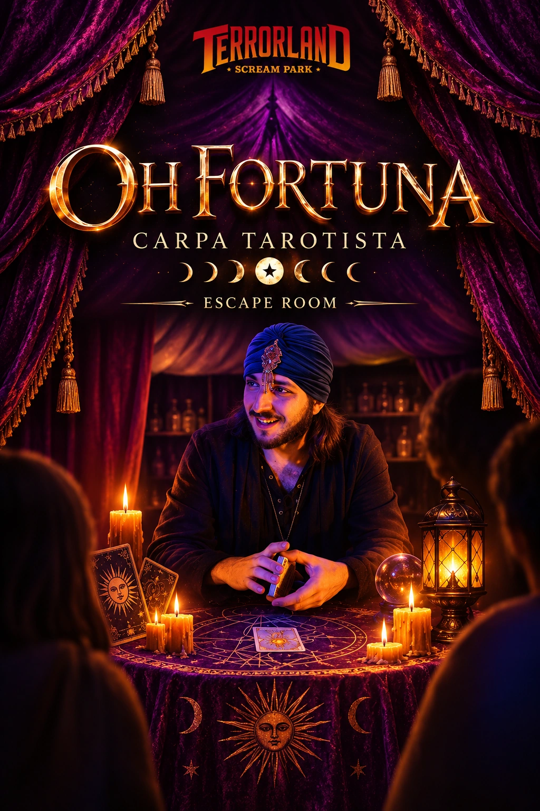

Ficha de catálogo
¡Oh Fortuna!
Terrorland
Ficha de ¡Oh Fortuna! de Terrorland en Puertollano, con datos de ubicación, duración, jugadores y enlaces de consulta.

Ficha de ¡Oh Fortuna! de Terrorland en Puertollano, con datos de ubicación, duración, jugadores y enlaces de consulta.
🃏 ¡Una misteriosa tienda de adivinación, un alquimista desaparecido y una sesión de tarot que jamás debería haberse celebrado!
En algún lugar olvidado por el tiempo, una antigua tienda de adivinación guarda secretos que nadie se ha atrevido a desvelar. Sus estanterías están repletas de extraños frascos, símbolos enigmáticos, reliquias ancestrales y objetos cuyo verdadero poder permanece oculto.
Pero algo terrible ha sucedido...
El alquimista que custodiaba aquel misterioso lugar ha desaparecido en circunstancias inexplicables. Y todo parece estar relacionado con una inquietante sesión de tarot que nunca debió realizarse.
Desde entonces, el delicado equilibrio entre el azar, la magia y el destino parece haberse alterado. Las cartas esconden mensajes, los antiguos símbolos guardan advertencias y cada objeto podría contener una pieza fundamental de un misterio que desafía las propias leyes de la suerte.
✨ ¡Hay fuerzas que es mejor no despertar y secretos que jamás deberían haber salido a la luz!
Ahora os toca a vosotros cruzar el umbral de esta enigmática tienda y adentraros en un universo donde nada es exactamente lo que parece.
Durante 60 minutos, vuestro equipo deberá explorar los secretos del alquimista, interpretar las señales que ha dejado atrás y descubrir qué ocurrió realmente aquella fatídica noche.
Tendréis que poner a prueba vuestra capacidad de observación, descifrar símbolos, relacionar pistas y utilizar vuestro ingenio para comprender los misterios que se esconden entre las reliquias y los instrumentos de alquimia.
Pero esta no es una investigación cualquiera...
🔮 Aquí no solo estáis intentando resolver una desaparición. Estáis desafiando al propio destino.
Cada descubrimiento puede acercaros a la verdad, pero también revelar que existen fuerzas mucho más poderosas de lo que imaginabais. La intuición, la lógica y el trabajo en equipo serán vuestros mejores aliados para comprender lo imposible y encontrar la manera de restaurar el equilibrio antes de que sea demasiado tarde.
Una aventura de misterio y fantasía diseñada para grupos de 3 a 5 jugadores, donde el simbolismo del tarot, los secretos de la alquimia y una atmósfera cargada de enigmas os transportarán a un mundo en el que la suerte podría no estar de vuestro lado.
⏳ El alquimista sigue desaparecido, las cartas ya han sido echadas y las fuerzas del destino parecen haber comenzado a moverse...
🃏 ¿Seréis capaces de interpretar las señales, descubrir la verdad y corregir aquello que nunca debió suceder?
🔮 ¡Atreveos a cruzar el umbral, desafiar lo desconocido y demostrar que incluso el destino puede ser engañado!